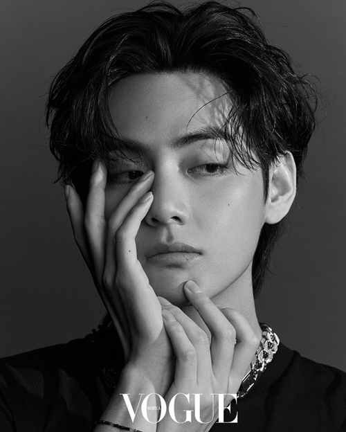

- 진
- RM
- 슈가
- 제이홉
- 지민
- 뷔
- 정국

지연이의 최애 멤버
굉장히 뚜렷한 이목구비의 소유자이다.
사방으로 트여있는 큰 눈과 오똑 솟은 높은 코가 대표적 특징.
한 성형외과 의사는 뷔같은 코를 만들고 싶지만 연골이나 재료가 이 정도로 타고난 사람이 없어서 만들 수 없다고 한 적이 있다.
특히 'T존 미남'이라 불릴 만큼 뚜렷하고 입체감 있는 T존이 이국적인 느낌을 더욱 배가시킨다.
성형전문의들은 특히 뷔의 얼굴에서 황금비율을 주목한다.
"얼굴의 정면, 측면 모두 완벽한 비율을 가지고 있으며, 특히 코끝에서 턱까지 연결된 선은 동양인에게서 찾아보기 힘들다.
완벽한 E라인의 소유자로 뚜렷한 페이스라인과 턱으로 인해 부드러우면서도 남성스러움이 공존하는 매력적인 얼굴형을 지녔다."라고 평가했다.